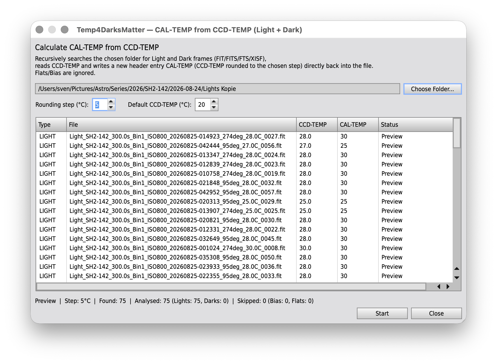

Temp4DarksMatter
PixInsight update repository for the Temp4DarksMatter script.
Recursively scans a folder of Light and Dark frames (FIT/FITS/FTS/XISF) and writes a
CAL-TEMP FITS header, computed by rounding CCD-TEMP to a
configurable step, with a configurable default temperature fallback for files
without a usable CCD-TEMP header.
This page is informational. For PixInsight, use the repository URL shown below.
Repository URL for PixInsight
https://tricx.de/pi-scripts/Temp4DarksMatter/
Installation in PixInsight
- Resources > Updates > Manage Repositories
- Add repository:
https://tricx.de/pi-scripts/Temp4DarksMatter/ - Accept missing signature
- Run Check for Updates
Screenshots
